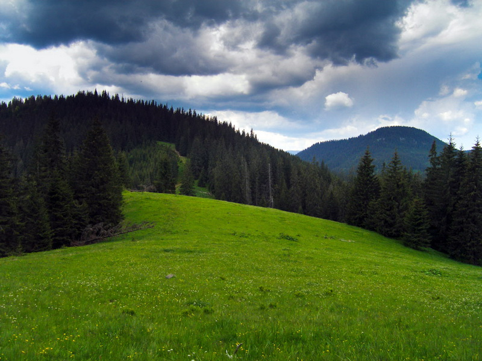
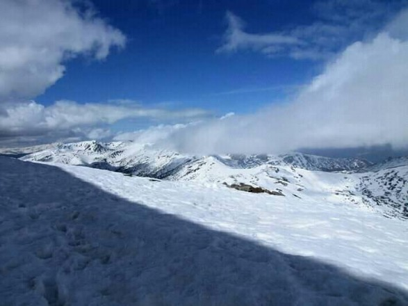
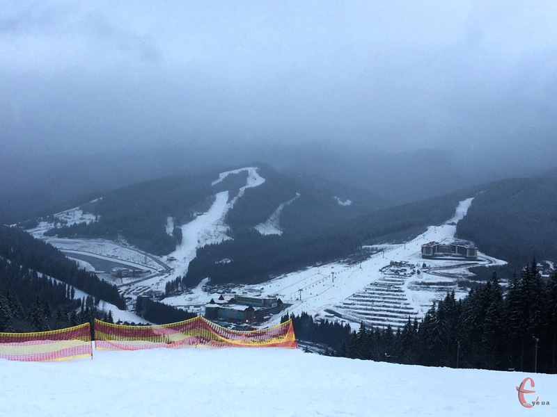

Головна
Про Карпати
Карпaти (пол. Karpaty, нім. Karpaten, словац. Karpaty, угор. Kárpátok, рум. Carpaţi, серб. Карпати) — гірська система на сході Центральної Європи, на території: України, Угорщини, Чехії, Польщі, Словаччини, Румунії, Сербії, Молдови та Австрії. Простягається від околиць Братислави до Залізних Воріт на 1 500 км, утворюючи опуклу дугу, що замикає Середньодунайську рівнину. Карпати — один з головних вододілів Європи між Балтійським і Чорним морем. Поділяються на дві субпровінції — Зовнішні Карпати (Західні[en] та Східні) і Внутрішні Карпати (Західні[en] та Східні). Орографічно виділяють Західні Карпати (територія Австрії, Чехії, Словаччини, Польщі та України — найвищі гірські масиви), Східні, або Лісисті, Карпати (найбільш знижена і звужена частина Карпат; Східні Карпати складаються зі Східних Бескидів (територія Польщі, Словаччини, України), Українських Карпат (Україна) і Молдово-Семиградських Карпат (Румунія), Південні Карпати, або Трансільванські Альпи (територія Румунії). Переважаючі висоти Карпат 800—1200 м, найбільша висота — 2 655 м (гора Герлаховський штит в Татрах), в Україні — гора Говерла (2 061 м). Найбільша ширина — 430 км. Площа цієї гірської системи — 24 тисячі км². В українських Карпатах росте 20 % всіх лісів України. Карпатські гори відносно молоді, сформовані в альпійську епоху горотворення, їхній вік понад 25 мільйонів років.Фото
  